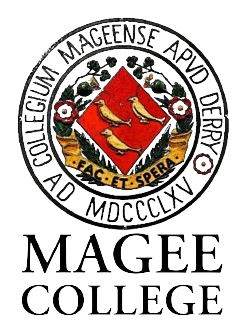
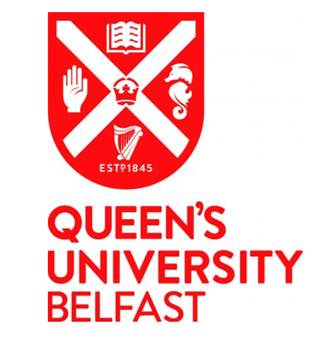
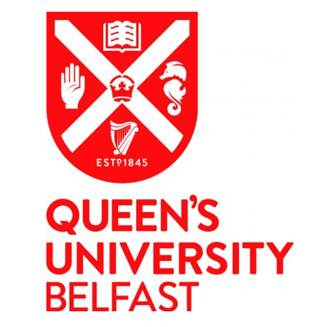
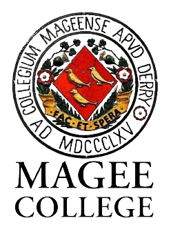
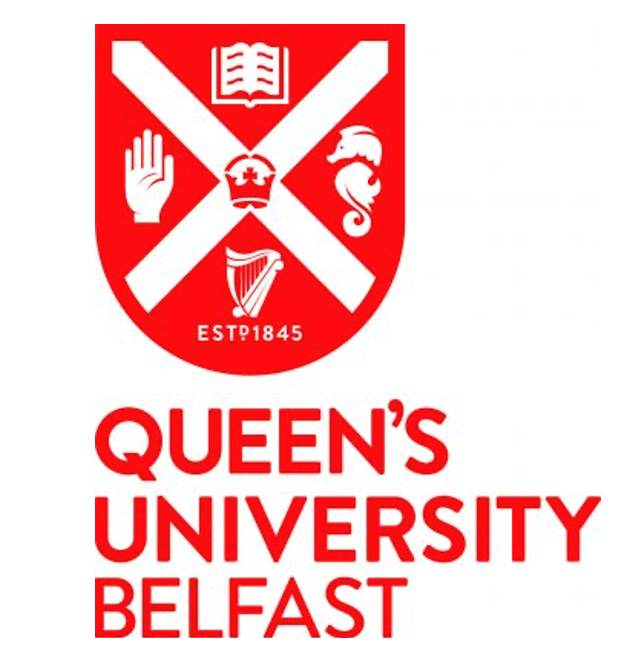

 


I did my undergraduate in mathematics in Trinity College Dublin.
After this I taught Mathematics, Further Mathematics, and Physics for a short while, before returning to academia to complete a further Masters in Research and then
begin a PhD in Mathematics and Computational Neuroscience.
As for research, see here for more detail, but I have an interest in understanding the role of synaptic plasticity using spectral and dynamic graph theory.
I am also a visiting researcher in Bristol University.
Research
Group
Past and present:


jmcallis@tcd.ie LinkedIn Profile